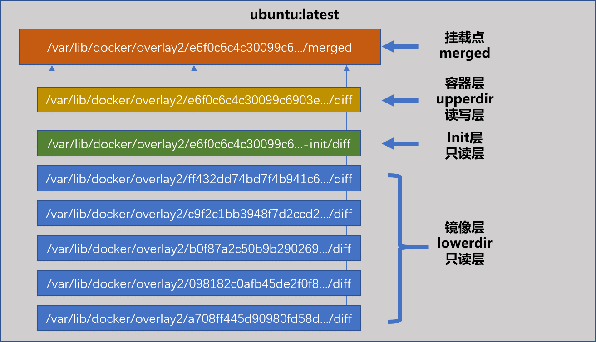

mount namespace
“左耳朵耗子” 叔的一篇将docker的Namespace的文章，文章地址：https://coolshell.cn/articles/17010.html ,里面有个小程序:
#define _GNU_SOURCE
#include <sys/mount.h>
#include <sys/types.h>
#include <sys/wait.h>
#include <stdio.h>
#include <sched.h>
#include <signal.h>
#include <unistd.h>
/* 定义一个给 clone 用的栈，栈大小1M */
#define STACK_SIZE (1024 * 1024)
static char container_stack[STACK_SIZE];
char* const container_args[] = {
"/bin/bash",
NULL
};
int container_main(void* arg)
{
printf("Container [%5d] - inside the container!\n", getpid());
execv(container_args[0], container_args);
printf("Something's wrong!\n");
return 1;
}
int main()
{
printf("Parent [%5d] - start a container!\n", getpid());
/* 启用Mount Namespace - 增加CLONE_NEWNS参数 */
int container_pid = clone(container_main, container_stack+STACK_SIZE,
CLONE_NEWUTS | CLONE_NEWPID | CLONE_NEWNS | SIGCHLD, NULL);
waitpid(container_pid, NULL, 0);
printf("Parent - container stopped!\n");
return 0;
}
clone创建一个新的子进程，启动mount namespace（CLONE_NEWNS标志），子进程启动/bin/bash程序，这个shell就运行在mount namespace的隔离环境里。
编译下：
[root@yzw test]# gcc -o container container.c
[root@yzw test]# ./container
Parent [19645] - start a container!
Container [ 1] - inside the container!
[root@yzw test]# ls /tmp/
test
发现依然能看到很多宿主机的文件。为什么mount namespace开启后，容器里面和宿主机的文件完全一样呢？
因为mount namespace修改的是容器进程对文件系统“挂载点”的认知，只有在“挂载”操作之后才能起作用，之前新创建的容器会继承宿主机的挂载点。
我们在上面程序bash操作前重新以tmpfs内存盘的格式mount /tmp目录：
int container_main(void* arg)
{
printf("Container [%5d] - inside the container!\n", getpid());
//如果机器根目录的挂载类型是shared，得重新挂载根目录
//mount("","/",NULL,MS_PRIVATE,"")
mount("none","/tmp","tmpfs",0,"")
execv(container_args[0], container_args);
printf("Something's wrong!\n");
return 1;
}
编译执行结果：
[root@yzw test]# gcc -o container container.c
[root@yzw test]# ./container
Parent [19861] - start a container!
Container [ 1] - inside the container!
[root@yzw test]# ls /tmp/
[root@yzw test]#
[root@yzw test]# mount -l | grep tmpfs
...
none on /tmp type tmpfs (rw,relatime,seclabel)
在宿主机上：
# 按理说应该是看不见的，在虚拟机里还能看到，后面再调查哈为啥？？
tmp目录下已经和宿主机的tmp目录内容不一致了。
当新创一个容器时，在容器进程启动前重新挂载根目录，由于mount namespace的存在，这个目录对宿主机不可见，容器里面的文件系统就是一个隔离的环境了。
issue
重新挂载/tmp目录的实验执行完成后，在宿主机上居然可以看到这个挂载信息。。这是怎么回事呢？实际上，大家自己装的虚拟机，或者云上的虚拟机的根目录，很多都是以share方式的挂载的。这时候，你在容器里做mount也会继承share方式。这样就会把容器内挂载传播到宿主机上。解决这个问题，你可以在重新挂载/tmp之前，在容器内先执行一句：mount(“”, “/“, NULL, MS_PRIVATE, “”) 这样，容器内的根目录就是private挂载的了。（没起作用?）
chroot
chroot可以改变进程的根目录到指定目录，把bash和ls程序以及运行需要的so文件拷贝过来:
[root@yzw tmp]# mkdir -p test/{bin,lib64,lib}
[root@yzw tmp]# cd test/
[root@yzw test]# cp /bin/{bash,ls} bin/
[root@yzw test]# T=/tmp/test
[root@yzw test]# list="$(ldd /bin/ls | egrep -o '/lib.*\.[0-9]')"
[root@yzw test]# for i in $list; do cp -v "$i" "${T}${i}";done
[root@yzw test]# list="$(ldd /bin/bash | egrep -o '/lib.*\.[0-9]')"
[root@yzw test]# for i in $list; do cp -v "$i" "${T}${i}";done
[root@yzw tmp]# chroot /tmp/test /bin/bash
bash-4.2# ls /
bin lib lib64
bash进程的根目录被修改了，感知不到宿主机的目录，这种方式和mount namespace效果类似，mount namespace就是基于chroot改进而来的。
镜像
为了让容器的这个根目录真实，我们一般会把给根目录挂载一个完整的操作系统的文件系统，比如ubuntu的ISO。这样启动之后，我们ls根目录就是整个ubuntu的所有目录和文件了。这个挂载在容器根目录，用来为容器j进程提供隔离后执行环境的文件系统，就是容器镜像，还有关于专业的名称，rootfs（根文件系统）。
[root@yzw ~]# docker ps
CONTAINER ID IMAGE COMMAND CREATED STATUS PORTS NAMES
ededc6515049 busybox "/bin/sh" 2 hours ago Up 2 hours cranky_lichterman
[root@yzw ~]# docker exec -it ededc6515049 /bin/sh
/ # ls
bin dev etc home proc root sys tmp usr var
进入容器执行的sh，ls程序，就是容器/bin目录下的程序，和宿主机上的sh，ls完全不一样。
docker项目最核心的的原理就是为带创建的用户进程：
- 启动namespace设置；
- 设置指定的cgroup参数；
- 切换进程的根目录；
docker 优先使用pivot_root系统调用，如果不支持才使用chroot。
rootfs只是一个操作系统包含的文件，配置和目录，并不包括内核。linux操作系统中，内核和这些是分开的，开机时将内核加载到内存中。所有同一个宿主机上的容器公用同一个内核。如果容器应用要修改内核的配置啥的会影响这个宿主机的，这点不如虚机隔离性好。
容器的一致性
不管是本地，还是云端，还是任何一个机器，用户只要解压打包好的rootfs，这个应用就能跑起来。解决了PaaS打包的大问题。
如果一个rootfs做好，另外一个应用像在这个上面进行修改，再发布，这样维护起来比较麻烦，不具备扩展性。docker公司引入了layer的概念，用户制作镜像的每一个步骤，都会生成一个layer，就是一个增量的rootfs。
Docker 的storage driver除了支持AUFS外，还支持devicemapper，overlayer，btrfs等，现在Docker CE默认为overlayer2，如果后端是direct-LVM的话，会默认为devicemapper。通过docker info可以查询到：
[root@yzw ~]# docker info
Containers: 1
Running: 1
Paused: 0
Stopped: 0
Images: 109
Server Version: 18.06.1-ce
Storage Driver: overlay2
Backing Filesystem: extfs
Supports d_type: true
Native Overlay Diff: true
AUFS
联合文件系统（union file system） unionFS最主要的功能就是可以将多个不同位置的目录联合挂载在同一个目录下。AUFS全称Another UnionFS，后面又叫Alternative UnionFS，再后就又叫Advance UnionFS，只能在ubuntu和Debian上使用，因为没有被Linus合入linux主分干，下面例子在Ubuntu上跑的。
root@yzw-vm:/tmp# tree
.
├── A
│ ├── a
│ └── x
├── B
│ ├── b
│ └── x
└── C
3 directories, 4 files
root@yzw-vm:/tmp# cat A/x
a
root@yzw-vm:/tmp# cat B/x
b
root@yzw-vm:/tmp# mount -t aufs -o dirs=./A:./B none ./C
root@yzw-vm:/tmp# tree
.
├── A
│ ├── a
│ └── x
├── B
│ ├── b
│ └── x
└── C
├── a
├── b
└── x
3 directories, 7 files
root@yzw-vm:/tmp# cat C/x
a
root@yzw-vm:/tmp# df -h
Filesystem Size Used Avail Use% Mounted on
...
none 59G 22G 34G 40% /tmp/C
root@yzw-vm:/tmp# echo "c" > C/x
root@yzw-vm:/tmp# cat C/x
c
root@yzw-vm:/tmp# cat A/x
c
root@yzw-vm:/tmp# cat B/x
b
合并后的C目录，x只有一份，通过“写时复制策略实现镜像的共享和最小化磁盘开销。对C中的文件进行修改，A，B 中对应文件也会生效(相同文件存在覆盖除外)。
AUFS工作在文件的层次上，也就是说AUFS对文件的操作需要将整个文件复制到读写层内，哪怕只是文件的一小部分被改变，也需要复制整个文件。这在一定成度上会影响容器的性能，尤其是当要复制的文件很大，文件在栈的下面几层或文件在目录中很深的位置时，对性能的影响会很显著。
通过“写时复制（CoW）”策略实现镜像的共享和最小化磁盘开销。任何对于底层文件系统分层的更改都会被“向上拷贝”到文件系统的一个临时、工作、或高层的分层里面。这个可写的层然后可以被看做是一个“改动（diff）”，能将之应用到下层只读的层，而这些层很可能作为底层被很多容器的进程中共享。
一个Docker中使用分层文件系统的好处就是，1000个运行着bash的ubuntu:latest容器的副本，会共享一个底层的镜像，而并不会产生1000个文件系统的副本（vfs是个例外，请参考下边vfs部分）。并且同样重要的是，对于aufs和overlay的实现，用来读取或执行共享库的共享内存也在所有运行的容器之间共享，大大的减少了通用库如'libc'的内存占用。
issue
- 目录联合挂载时，如果A和B目录里的x文件内容不一样，这时如何处理？
aufs是一层一层往上盖的，所以我给的例子里，A里面的x会覆盖B里面的x.
root@yzw-vm:/tmp# mount -t aufs -o dirs=./B:./A none ./C
root@yzw-vm:/tmp# tree
.
├── A
│ ├── a
│ └── x
├── B
│ ├── b
│ └── x
└── C
├── a
├── b
└── x
3 directories, 7 files
root@yzw-vm:/tmp# cat C/x
b
- 没有内核所以rootfs会比较小，请问一般安装的linux系统内核文件在哪里存放呢？ 首先，docker镜像比较小不只是因为没有内核，内核本身其实不大。大小的差异主要因为我们平常看见的虚拟机镜像实际上是整个磁盘的快照。其次，一般情况下，内核放下安装盘里，解压到磁盘上，加载到内存中。有兴趣可以读这里：https://blog.csdn.net/gatieme/article/details/50914250
devicemapper
早期Docker在Debian，Ubuntu系统中默认使用AUFS，RedHat系统用devicemapper。devicemapper是红帽系主推的。
devicemapper是基于块设备的，不是基于文件的。它质量上有优点也有缺点，如果安装/配置过程中没有特别格外注意的话，可能导致和其他选项比较起来性能低下、质量不高。鉴于overlay和overlay2受到了Fedora和RHEL最新的内核的支持，并且拥有SELinux的支持，除非在Red Hat场景中有某种必须使用devicemapper的需求，我想随着用户的成熟他们会转向overlay的怀抱。
overlay2
overlay2是什么
Overlay是一个联合文件系统，它的概念较之aufs的分支模型更为简单。Overlay通过三个概念来实现它的文件系统：一个“下层目录（lower-dir）”，一个“上层目录（upper-dir）”，将着两个layers联合挂载后就是一个做为文件系统合并视图的“合并（merged）”目录。镜像层和容器曾可以有相同的文件，这中情况下，upperdir中的文件覆盖lowerdir中的文件。

受限于只有一个“下层目录”，需要额外的工作来让“下层目录”递归嵌套（下层目录自己又是另外一个overlay的联合），或者按照Docker的实现，将所有位于下层的内容都硬链接到“下层目录”中。正是这种可能潜在的inode爆炸式增长（因为有大量的分层和硬连接）阻碍了很多人采用Overlay。
Overlay2支持多个下层目录，最多128个，解决了Overlay的inode耗尽的问题，继承了Overlay很多优点，包括包括在同一个引擎的多个容器间从同一个分层中加载内库从而达到内存共享。
Docker 配置使用overlay2：https://docs.docker.com/storage/storagedriver/overlayfs-driver/#configure-docker-with-the-overlay-or-overlay2-storage-driver
举个例子
看下ubuntu镜像由5层构成：
root@yzw-vm:~# docker pull ubuntu:latest
latest: Pulling from library/ubuntu
124c757242f8: Pull complete
9d866f8bde2a: Pull complete
fa3f2f277e67: Pull complete
398d32b153e8: Pull complete
afde35469481: Pull complete
Digest: sha256:de774a3145f7ca4f0bd144c7d4ffb2931e06634f11529653b23eba85aef8e378
Status: Downloaded newer image for ubuntu:latest
root@yzw-vm:~# docker image inspect ubuntu
[
...
"GraphDriver": {
"Data": {
"LowerDir": "/var/lib/docker/overlay2/c9f2c1bb3948f7d2ccd2b84e13b317b0a41fb47c35b89bf6d2a7b19f3e81b339/diff:/var/lib/docker/overlay2/b0f87a2c50b9b290269ee5ee55ce06dae5b877dc740cbc9ce3103476818d3438/diff:/var/lib/docker/overlay2/098182c0afb45de2f0f8911a95d3bcb282e130dbeea4f9ea8c1f0899d267b314/diff:/var/lib/docker/overlay2/a708ff445d90980fd58da00dd9b2fc2917ef61cb3b1aaed9bda7ea44aba12412/diff",
"MergedDir": "/var/lib/docker/overlay2/ff432dd74bd7f4b941c667517c450bb75e7af61eda23a005d75db6e9b812d0e0/merged",
"UpperDir": "/var/lib/docker/overlay2/ff432dd74bd7f4b941c667517c450bb75e7af61eda23a005d75db6e9b812d0e0/diff",
"WorkDir": "/var/lib/docker/overlay2/ff432dd74bd7f4b941c667517c450bb75e7af61eda23a005d75db6e9b812d0e0/work"
},
"Name": "overlay2"
},
"RootFS": {
"Type": "layers",
"Layers": [
"sha256:a30b835850bfd4c7e9495edf7085cedfad918219227c7157ff71e8afe2661f63",
"sha256:6267b420796f78004358a36a2dd7ea24640e0d2cd9bbfdba43bb0c140ce73567",
"sha256:f73b2816c52ac5f8c1f64a1b309b70ff4318d11adff253da4320eee4b3236373",
"sha256:6a061ee02432e1472146296de3f6dab653f57c109316fa178b40a5052e695e41",
"sha256:8d7ea83e3c626d5ef1e6a05de454c3fe8b7a567db96293cb094e71930dba387d"
]
},
...
在/var/lib/docker/overylay2目录下：
root@yzw-vm:/var/lib/docker/overlay2# ls -lt
total 156
drwx------ 4 root root 4096 Sep 12 11:25 ff432dd74bd7f4b941c667517c450bb75e7af61eda23a005d75db6e9b812d0e0
drwx------ 2 root root 4096 Sep 12 11:25 l
drwx------ 4 root root 4096 Sep 12 11:25 c9f2c1bb3948f7d2ccd2b84e13b317b0a41fb47c35b89bf6d2a7b19f3e81b339
drwx------ 4 root root 4096 Sep 12 11:25 b0f87a2c50b9b290269ee5ee55ce06dae5b877dc740cbc9ce3103476818d3438
drwx------ 4 root root 4096 Sep 12 11:25 098182c0afb45de2f0f8911a95d3bcb282e130dbeea4f9ea8c1f0899d267b314
drwx------ 3 root root 4096 Sep 12 11:25 a708ff445d90980fd58da00dd9b2fc2917ef61cb3b1aaed9bda7ea44aba12412
...
l目录包含了很多软连接，使用短名称指向了其他层。短名称用于避免mount参数时达到页面大小的限制。
root@yzw-vm:/var/lib/docker/overlay2# ls -lt l/
total 152
lrwxrwxrwx 1 root root 72 Sep 12 11:25 AKSNN53ER6ZYNOBNG66LKFO64B -> ../ff432dd74bd7f4b941c667517c450bb75e7af61eda23a005d75db6e9b812d0e0/diff
lrwxrwxrwx 1 root root 72 Sep 12 11:25 INN4Q6OLITXODWESIJWDCOU7W5 -> ../c9f2c1bb3948f7d2ccd2b84e13b317b0a41fb47c35b89bf6d2a7b19f3e81b339/diff
lrwxrwxrwx 1 root root 72 Sep 12 11:25 USMKDHE2W2PPV64EAYHRKEJQDX -> ../b0f87a2c50b9b290269ee5ee55ce06dae5b877dc740cbc9ce3103476818d3438/diff
lrwxrwxrwx 1 root root 72 Sep 12 11:25 JGVKVFIFNC4A2SCJW2MTBLPCJK -> ../098182c0afb45de2f0f8911a95d3bcb282e130dbeea4f9ea8c1f0899d267b314/diff
lrwxrwxrwx 1 root root 72 Sep 12 11:25 2XXDFCYHLGAYYD4NHPEYWAQRAN -> ../a708ff445d90980fd58da00dd9b2fc2917ef61cb3b1aaed9bda7ea44aba12412/diff
link文件里是l目录下这个目录的短名称，diff目录就是镜像内容，lower文件指出了该层的组成，由高层到低层；work目录？？？
最底层目录只有diff目录和link文件。其他底层目录除了diff，link外还有lower文件和work目录。
root@yzw-vm:/var/lib/docker/overlay2# ls ff432dd74bd7f4b941c667517c450bb75e7af61eda23a005d75db6e9b812d0e0/
diff link lower work
root@yzw-vm:/var/lib/docker/overlay2# ls c9f2c1bb3948f7d2ccd2b84e13b317b0a41fb47c35b89bf6d2a7b19f3e81b339/
diff link lower work
root@yzw-vm:/var/lib/docker/overlay2# ls b0f87a2c50b9b290269ee5ee55ce06dae5b877dc740cbc9ce3103476818d3438/
diff link lower work
root@yzw-vm:/var/lib/docker/overlay2# ls 098182c0afb45de2f0f8911a95d3bcb282e130dbeea4f9ea8c1f0899d267b314/
diff link lower work
root@yzw-vm:/var/lib/docker/overlay2# ls a708ff445d90980fd58da00dd9b2fc2917ef61cb3b1aaed9bda7ea44aba12412/
diff link
root@yzw-vm:/var/lib/docker/overlay2# ls a708ff445d90980fd58da00dd9b2fc2917ef61cb3b1aaed9bda7ea44aba12412/diff/
bin boot dev etc home lib lib64 media mnt opt proc root run sbin srv sys tmp usr var
root@yzw-vm:/var/lib/docker/overlay2# cat a708ff445d90980fd58da00dd9b2fc2917ef61cb3b1aaed9bda7ea44aba12412/link
2XXDFCYHLGAYYD4NHPEYWAQRAN
root@yzw-vm:/var/lib/docker/overlay2# cat ff432dd74bd7f4b941c667517c450bb75e7af61eda23a005d75db6e9b812d0e0/lower
l/INN4Q6OLITXODWESIJWDCOU7W5:l/USMKDHE2W2PPV64EAYHRKEJQDX:l/JGVKVFIFNC4A2SCJW2MTBLPCJK:l/2XXDFCYHLGAYYD4NHPEYWAQRAN
容器运行起来后多了2个目录，读写层和初始层：
merged（挂载点）： 容器根目录。
/var/lib/docker/overlay2/e6f0c6c4c30099c6903e0c65fdeb46de4f9ed4d1d71338a54480f66f0b00010a/merged
upperdir（容器层）：初始时这个读写层时空的。
/var/lib/docker/overlay2/e6f0c6c4c30099c6903e0c65fdeb46de4f9ed4d1d71338a54480f66f0b00010a/diff
lowerdir（镜像层）：总共6层，除了image的5层外，多了一个init层。
/var/lib/docker/overlay2/l/LC4OCZQCW7HCEKLXMY4AIYBT7U
/var/lib/docker/overlay2/l/AKSNN53ER6ZYNOBNG66LKFO64B
/var/lib/docker/overlay2/l/INN4Q6OLITXODWESIJWDCOU7W5
/var/lib/docker/overlay2/l/USMKDHE2W2PPV64EAYHRKEJQDX
/var/lib/docker/overlay2/l/JGVKVFIFNC4A2SCJW2MTBLPCJK
/var/lib/docker/overlay2/l/2XXDFCYHLGAYYD4NHPEYWAQRAN
workdir：是用来完成如copy-on_write的操作。
/var/lib/docker/overlay2/e6f0c6c4c30099c6903e0c65fdeb46de4f9ed4d1d71338a54480f66f0b00010a/work
init层，这个位于只读层和读写层之间，docker项目单独生成的一个内部层，专门用来存/etc/hosts，/etc/resolv.conf等信息，这些原本属于ubuntu镜像一部分，但是用户往往需要在启动容器时写入一些指定的值比如hostname，需要在可读性层对他们进行修改。 这些修改支队当前容器有效，在docker commit时，不会把这一层提交掉，只会提交读写层。
/etc/hosts, /etc/resolv.conf和/etc/hostname，容器中的这三个文件不存在于镜像，而是存在于/var/lib/docker/containers/<container_id>，在启动容器的时候，通过mount的形式将这些文件挂载到容器内部。
修改容器里面/etc/hostname的内容，会在/var/lib/docker/containers/xxx/hostname看到修改。

容器内部的所有修改都在可读写层，docker commit和push保存的也是这个可读写层。
root@yzw-vm:/var/lib/docker/overlay2# docker run -it -d ubuntu /bin/bash
13d8a0e5162bfa3e087d20eef15a3805136ba2c2d6413356078ada71886639d4
root@yzw-vm:/var/lib/docker/overlay2# df -h
Filesystem Size Used Avail Use% Mounted on
...
tmpfs 395M 28K 395M 1% /run/user/120
tmpfs 395M 28K 395M 1% /run/user/1000
tmpfs 395M 0 395M 0% /run/user/0
overlay 59G 22G 35G 38% /var/lib/docker/overlay2/e6f0c6c4c30099c6903e0c65fdeb46de4f9ed4d1d71338a54480f66f0b00010a/merged
shm 64M 0 64M 0% /var/lib/docker/containers/13d8a0e5162bfa3e087d20eef15a3805136ba2c2d6413356078ada71886639d4/mounts/shm
root@yzw-vm:/var/lib/docker/overlay2# mount | grep overlay
overlay on /var/lib/docker/overlay2/e6f0c6c4c30099c6903e0c65fdeb46de4f9ed4d1d71338a54480f66f0b00010a/merged type overlay (rw,relatime,lowerdir=/var/lib/docker/overlay2/l/LC4OCZQCW7HCEKLXMY4AIYBT7U:/var/lib/docker/overlay2/l/AKSNN53ER6ZYNOBNG66LKFO64B:/var/lib/docker/overlay2/l/INN4Q6OLITXODWESIJWDCOU7W5:/var/lib/docker/overlay2/l/USMKDHE2W2PPV64EAYHRKEJQDX:/var/lib/docker/overlay2/l/JGVKVFIFNC4A2SCJW2MTBLPCJK:/var/lib/docker/overlay2/l/2XXDFCYHLGAYYD4NHPEYWAQRAN,upperdir=/var/lib/docker/overlay2/e6f0c6c4c30099c6903e0c65fdeb46de4f9ed4d1d71338a54480f66f0b00010a/diff,workdir=/var/lib/docker/overlay2/e6f0c6c4c30099c6903e0c65fdeb46de4f9ed4d1d71338a54480f66f0b00010a/work)
在容器内部可以看到overlay和shm两个文件挂载到根目录和/dev/shm目录
root@13d8a0e5162b:~# df -h
Filesystem Size Used Avail Use% Mounted on
overlay 59G 22G 35G 38% /
tmpfs 64M 0 64M 0% /dev
tmpfs 2.0G 0 2.0G 0% /sys/fs/cgroup
/dev/sda1 59G 22G 35G 38% /etc/hosts
shm 64M 0 64M 0% /dev/shm
tmpfs 2.0G 0 2.0G 0% /proc/acpi
tmpfs 2.0G 0 2.0G 0% /proc/scsi
tmpfs 2.0G 0 2.0G 0% /sys/firmware
各个layer目录：
root@yzw-vm:/var/lib/docker/overlay2# ls -lt
total 32
drwx------ 5 root root 4096 Sep 12 14:23 e6f0c6c4c30099c6903e0c65fdeb46de4f9ed4d1d71338a54480f66f0b00010a
drwx------ 4 root root 4096 Sep 12 14:23 e6f0c6c4c30099c6903e0c65fdeb46de4f9ed4d1d71338a54480f66f0b00010a-init
drwx------ 2 root root 4096 Sep 12 14:23 l
drwx------ 4 root root 4096 Sep 12 11:25 ff432dd74bd7f4b941c667517c450bb75e7af61eda23a005d75db6e9b812d0e0
drwx------ 4 root root 4096 Sep 12 11:25 c9f2c1bb3948f7d2ccd2b84e13b317b0a41fb47c35b89bf6d2a7b19f3e81b339
drwx------ 4 root root 4096 Sep 12 11:25 b0f87a2c50b9b290269ee5ee55ce06dae5b877dc740cbc9ce3103476818d3438
drwx------ 4 root root 4096 Sep 12 11:25 098182c0afb45de2f0f8911a95d3bcb282e130dbeea4f9ea8c1f0899d267b314
drwx------ 3 root root 4096 Sep 12 11:25 a708ff445d90980fd58da00dd9b2fc2917ef61cb3b1aaed9bda7ea44aba12412
root@yzw-vm:/var/lib/docker/overlay2# ls e6f0c6c4c30099c6903e0c65fdeb46de4f9ed4d1d71338a54480f66f0b00010a
diff link lower merged work
root@yzw-vm:/var/lib/docker/overlay2# ls e6f0c6c4c30099c6903e0c65fdeb46de4f9ed4d1d71338a54480f66f0b00010a/diff/
root@yzw-vm:/var/lib/docker/overlay2# ls e6f0c6c4c30099c6903e0c65fdeb46de4f9ed4d1d71338a54480f66f0b00010a/merged/
bin boot dev etc home lib lib64 media mnt opt proc root run sbin srv sys tmp usr var
root@yzw-vm:/var/lib/docker/overlay2# ls e6f0c6c4c30099c6903e0c65fdeb46de4f9ed4d1d71338a54480f66f0b00010a/work/
work
root@yzw-vm:/var/lib/docker/overlay2# ls e6f0c6c4c30099c6903e0c65fdeb46de4f9ed4d1d71338a54480f66f0b00010a/work/work/
root@yzw-vm:/var/lib/docker/overlay2# cat e6f0c6c4c30099c6903e0c65fdeb46de4f9ed4d1d71338a54480f66f0b00010a/link
A4DRDBGDJJI2XIR7VGQ4T2WOFF
root@yzw-vm:/var/lib/docker/overlay2# cat e6f0c6c4c30099c6903e0c65fdeb46de4f9ed4d1d71338a54480f66f0b00010a/lower
l/LC4OCZQCW7HCEKLXMY4AIYBT7U:l/AKSNN53ER6ZYNOBNG66LKFO64B:l/INN4Q6OLITXODWESIJWDCOU7W5:l/USMKDHE2W2PPV64EAYHRKEJQDX:l/JGVKVFIFNC4A2SCJW2MTBLPCJK:l/2XXDFCYHLGAYYD4NHPEYWAQRAN
root@yzw-vm:/var/lib/docker/overlay2#
root@yzw-vm:/var/lib/docker/overlay2# ls e6f0c6c4c30099c6903e0c65fdeb46de4f9ed4d1d71338a54480f66f0b00010a-init/
diff link lower work
root@yzw-vm:/var/lib/docker/overlay2# ls e6f0c6c4c30099c6903e0c65fdeb46de4f9ed4d1d71338a54480f66f0b00010a-init/diff/
dev etc
root@yzw-vm:/var/lib/docker/overlay2# ls e6f0c6c4c30099c6903e0c65fdeb46de4f9ed4d1d71338a54480f66f0b00010a-init/work/
work
root@yzw-vm:/var/lib/docker/overlay2# ls e6f0c6c4c30099c6903e0c65fdeb46de4f9ed4d1d71338a54480f66f0b00010a-init/work/work/
root@yzw-vm:/var/lib/docker/overlay2#
root@yzw-vm:/var/lib/docker/overlay2# cat e6f0c6c4c30099c6903e0c65fdeb46de4f9ed4d1d71338a54480f66f0b00010a-init/link
LC4OCZQCW7HCEKLXMY4AIYBT7U
root@yzw-vm:/var/lib/docker/overlay2# cat e6f0c6c4c30099c6903e0c65fdeb46de4f9ed4d1d71338a54480f66f0b00010a-init/lower
l/AKSNN53ER6ZYNOBNG66LKFO64B:l/INN4Q6OLITXODWESIJWDCOU7W5:l/USMKDHE2W2PPV64EAYHRKEJQDX:l/JGVKVFIFNC4A2SCJW2MTBLPCJK:l/2XXDFCYHLGAYYD4NHPEYWAQRAN
root@yzw-vm:/var/lib/docker/overlay2#
容器使用overlay读写
- 读容器层不存在的文件：
从镜像层中读取，有小的性能损耗。 - 读只存在于容器层的文件：
直接读取，不拷贝，无额外性能损耗。 - 读同时存在于容器和镜像层的文件：
直接读取容器层文件，因为容器层隐藏了镜像层的同名文件。无额外性能损耗。 - 写一个文件：
容器写一个已经存在的文件，容器层不存在这个文件，overlay会将整个文件拷贝到容器层进行修改，拷贝只发生在第一次写入文件时，后面就直接容器层写了。
OverlayFS只工作在两层中。这比AUFS要在多层镜像中查找时性能要好。 - 删除文件和目录：
删除文件时，容器层会镜像层创建一个whiteout文件，而镜像层的文件并没有被删，whiteout文件会隐藏它。例如删除一个foo文件，容器层创建一个.wh.foo的文件，当这两层被联合挂载之后，foo文件就会被.wh.foo文件遮挡起来消失了。翻译成“白障”。 删除目录时，容器层会创建一个不透明目录，和whiteout文件隐藏镜像层文件类似。 - 重命名目录：
只有在源路径和目的路径都在顶层容器层时，才允许执行rename操作。否则，会返回EXDEV。因此，你的应用需要能够处理EXDEV，并且回滚操作，执行替代的“拷贝和删除”策略。（没理解）
性能
引用: https://arkingc.github.io/2017/05/05/docker-filesystem-overlay/
一般来说，overlay/overlay2很快，几乎肯定比aufs和devicemapper快。在某些特定场景下，还可能比btrfs快。 此外，还有几点overlay/overlay2驱动性能相关的注意事项：
页缓存：OverlayFS支持页缓存共享，意味着多个容器访问相同的文件能够共享一个单一的page cache entry。 使得overlay/overlay2驱动能高效使用内存，是PaaS以及其它高密度场景一个好的选择。
copy_up：对镜像层大文件进行写操作时，copy-on-write会给写操作带来大量延迟。
inode 限制：使用overlay会引起过度的inode消耗，消耗会随着主机上的镜像和容器的增加而增加。 拥有大量镜像的主机在大量容器启动和停止时可能会耗尽inodes。 不幸的是你只能在文件系统创建时指定inode数，因此你可能需要考虑将/var/lib/docker放在另一个独立的设备上， 或者在创建文件系统时手动修改inode值。而overlay2则没有这样的问题。
RPM和Yum：OverlayFS仅实现了POSIX标准的一部分，某些操作还会违反POSIX标准，copy_up操作就是其中一个。
下面是提升OverlayFS驱动性能的最佳实践。
SSD：为了获得最佳性能，一个通常的想法是使用诸如SSD这类更快的存储设备；
使用数据卷： 数据卷提供了最好的以及最可预见的性能。 因为绕过了存储驱动，因此不会存在瘦供给和copy-on-write带来的潜在性能开销。 因此，写操作较频繁的数据应该放在数据卷上。
Dockerfile
python:2.7-slim基础镜像一共有4层layer。
root@yzw-vm:/home/yzw/docker# docker images
REPOSITORY TAG IMAGE ID CREATED SIZE
python 2.7-slim c9cde4658340 7 days ago 120MB
root@yzw-vm:/home/yzw/docker# ls -l /var/lib/docker/overlay2/
total 20
drwx------ 4 root root 4096 Sep 12 22:07 0111758e6c9c78c7ae33a181232bf15aa1fc9c314d1b9cacd9506541065a7379
drwx------ 2 root root 4096 Sep 12 22:07 l
drwx------ 4 root root 4096 Sep 12 22:07 4560378751a6edaa1b7ed848d632310eaf96431d9643792a5d2462b315263c0e
drwx------ 4 root root 4096 Sep 12 22:07 f6a44ab116768ddf5ba69b2f9601a627ececb2d9d20b6a5956bf97818fd46691
drwx------ 3 root root 4096 Sep 12 22:07 897596fd5f4efb3890c0801cb3813374fb9c40513f172bf2bf05f3f0c9e37d4b
基于python:2.7-slim基础镜像build一个新的镜像
root@yzw-vm:/home/yzw/docker# cat Dockerfile
FROM python:2.7-slim
WORKDIR /app
ADD . /app
RUN pip install --trusted-host pypi.python.org -r requirements.txt
EXPOSE 80
ENV NAME World
CMD ["python","app.py"]
root@yzw-vm:/home/yzw/docker# docker build -t helloworld .
...
root@yzw-vm:/home/yzw/docker# docker images
REPOSITORY TAG IMAGE ID CREATED SIZE
helloword latest 7c6f3f79a9d1 30 minutes ago 131MB
python 2.7-slim c9cde4658340 7 days ago 120MB
在python基础镜像的基础上多出了3个layer，WORKDIR，ADD，RUN每一个操作会生成一个layer
root@yzw-vm:/var/lib/docker/overlay2# ls -lt
total 32
drwx------ 2 root root 4096 Sep 12 22:10 l
drwx------ 4 root root 4096 Sep 12 22:10 4463cacc12fd606d136c25228be202afba963954ea3b90b9aa22e760230eb559
drwx------ 4 root root 4096 Sep 12 22:09 1c6de6d90e60da84614b9ffe7147ccc3465e9d301445161f1c8d0b8bdb3e8044
drwx------ 4 root root 4096 Sep 12 22:09 44744bbff15cfb1a73c168cee6d23b4e99458d5c4a72199a310016d7ebd4e28d
drwx------ 4 root root 4096 Sep 12 22:07 0111758e6c9c78c7ae33a181232bf15aa1fc9c314d1b9cacd9506541065a7379
drwx------ 4 root root 4096 Sep 12 22:07 4560378751a6edaa1b7ed848d632310eaf96431d9643792a5d2462b315263c0e
drwx------ 4 root root 4096 Sep 12 22:07 f6a44ab116768ddf5ba69b2f9601a627ececb2d9d20b6a5956bf97818fd46691
drwx------ 3 root root 4096 Sep 12 22:07 897596fd5f4efb3890c0801cb3813374fb9c40513f172bf2bf05f3f0c9e37d4b
root@yzw-vm:/var/lib/docker/overlay2# ls -lt 44744bbff15cfb1a73c168cee6d23b4e99458d5c4a72199a310016d7ebd4e28d/diff/app
total 0
root@yzw-vm:/var/lib/docker/overlay2# ls -lt 1c6de6d90e60da84614b9ffe7147ccc3465e9d301445161f1c8d0b8bdb3e8044/diff/app/
total 12
-rw-r--r-- 1 root root 168 Sep 12 22:08 Dockerfile
-rw-r--r-- 1 root root 6 Sep 12 22:01 requirements.txt
-rw-rw-r-- 1 root root 324 Sep 12 21:59 app.py
root@yzw-vm:/var/lib/docker/overlay2# ls -lt 4463cacc12fd606d136c25228be202afba963954ea3b90b9aa22e760230eb559/diff
total 12
drwxrwxrwt 2 root root 4096 Sep 12 22:10 tmp
drwx------ 3 root root 4096 Sep 12 22:09 root
drwxr-xr-x 3 root root 4096 Aug 31 08:00 usr